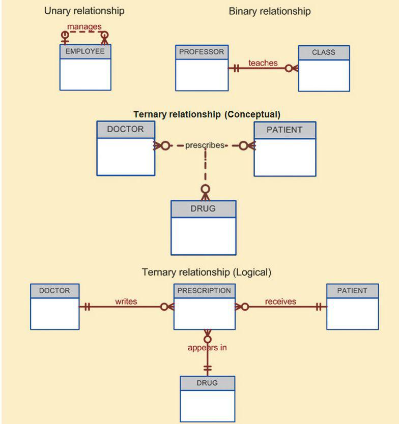
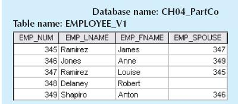

The main characteristics of entity relationship components
The main characteristics of entity relationship components4 ENTITY RELATIONSHIP (ER) MODELING
In this chapter, you will learn:
The main characteristics of entity relationship components
How relationships between entities are defined, refined, and incorporated into the database design process
How ERD components affect database design and implementation
That real-world database design often requires the reconciliation of conflicting goals
Preview
This chapter expands coverage of the data-modeling aspect of database design. Data modeling is the first step in the database design journey, serving as a bridge between real-world objects and the database model that is implemented in the computer. Therefore, the importance of data-modeling details, expressed graphically through entity relationship diagrams (ERDs), cannot be overstated.
Most of the basic concepts and definitions used in the entity relationship model (ERM) were introduced in Chapter 2, Data Models. For example, the basic components of entities and relationships and their representation should now be familiar to you. This chapter goes much deeper, analyzing the graphic depiction of relationships among the entities and showing how those depictions help you summarize the wealth of data required to implement a successful design.
Finally, the chapter illustrates how conflicting goals can be a challenge in database design and might require design compromises.
NOTE
Because this book generally focuses on the relational model, you might be tempted to conclude that the ERM is exclusively a relational tool. Actually, conceptual models such as the ERM can be used to understand and design the data requirements of an organization. Therefore, the ERM is independent of the database type. Conceptual models are used in the conceptual design of databases, while relational models are used in the logical design of databases. However, because you are familiar with the relational model from the previous chapter, the relational model is used extensively in this chapter to explain ER constructs and the way they are used to develop database designs.
4.1 THE ENTITY RELATIONSHIP MODEL (ERM)
You should remember from Chapter 2, Data Models, and Chapter 3, The Relational Database Model, that the ERM forms the basis of an ERD. The ERD represents the conceptual database as viewed by the end user. ERDs depict the database’s main components: entities, attributes, and relationships. Because an entity represents a real-world object, the words entity and object are often used interchangeably. Thus, the entities (objects) of the Tiny College database design developed in this chapter include students, classes, teachers, and classrooms. The order in which the ERD components are covered in the chapter is dictated by the way the modeling tools are used to develop ERDs that can form the basis for successful database design and implementation.
In Chapter 2, you also learned about the various notations used with ERDs—the original Chen notation and the newer Crow’s Foot and UML notations. The first two notations are used at the beginning of this chapter to introduce some basic ER modeling concepts. Some conceptual database modeling concepts can be expressed only using the Chen notation. However, because the emphasis is on design and implementation of databases, the Crow’s Foot and UML class diagram notations are used for the final Tiny College ER diagram example. Because of its emphasis on implementation, the Crow’s Foot notation can represent only what could be implemented. In other words:
• The Chen notation favors conceptual modeling.
• The Crow’s Foot notation favors a more implementation-oriented approach.
• The UML notation can be used for both conceptual and implementation modeling.
 ONLINE CONTENT
ONLINE CONTENT
To learn how to create ER diagrams with the help of Microsoft Visio, go to www.cengagebrain.com:
• Appendix A, Designing Databases with Visio Professional: A Tutorial shows you how to create Crow’s Foot ERDs.
• Appendix H, Unified Modeling Language (UML), shows you how to create UML class diagrams.
Recall that an entity is an object of interest to the end user. In Chapter 2, you learned that at the ER modeling level, an entity actually refers to the entity set and not to a single entity occurrence. In other words, an entity in the ERM corresponds to a table—not to a row—in the relational environment. The ERM refers to a table row as an entity instance or entity occurrence. In the Chen, Crow’s Foot, and UML notations, an entity is represented by a rectangle that contains the entity’s name. The entity name, a noun, is usually written in all capital letters.
Attributes are characteristics of entities. For example, the STUDENT entity includes the attributes STU_LNAME, STU_FNAME, and STU_INITIAL, among many others. In the original Chen notation, attributes are represented by ovals and are connected to the entity rectangle with a line. Each oval contains the name of the attribute it represents. In the Crow’s Foot notation, the attributes are written in the attribute box below the entity rectangle. (See Figure 4.1.) Because the Chen representation consumes more space, software vendors have adopted the Crow’s Foot attribute display.
FIGURE 4.1 The attributes of the STUDENT entity: Chen and Crow’s Foot
SOURCE: Course Technology/Cengage Learning
Required and Optional Attributes
A required attribute is an attribute that must have a value; in other words, it cannot be left empty. As shown in Figure 4.1, the two boldfaced attributes in the Crow’s Foot notation indicate that data entry will be required. STU_LNAME and STU_FNAME require data entries because all students are assumed to have a last name and a first name. However, students might not have a middle name, and perhaps they do not yet have a phone number and an e-mail address. Therefore, those attributes are not presented in boldface in the entity box. An optional attribute is an attribute that does not require a value; therefore, it can be left empty.
Domains
Attributes have a domain. As you learned in Chapter 3, a domain is the set of possible values for a given attribute. For example, the domain for a grade point average (GPA) attribute is written (0,4) because the lowest possible GPA value is 0 and the highest possible value is 4. The domain for a gender attribute consists of only two possibilities: M or F (or some other equivalent code). The domain for a company’s date of hire attribute consists of all dates that fit in a range (for example, company startup date to current date).
Attributes may share a domain. For instance, a student address and a professor address share the same domain of all possible addresses. In fact, the data dictionary may let a newly declared attribute inherit the characteristics of an existing attribute if the same attribute name is used. For example, the PROFESSOR and STUDENT entities may each have an attribute named ADDRESS and could therefore share a domain.
Identifiers (Primary Keys)
The ERM uses identifiers—one or more attributes that uniquely identify each entity instance. In the relational model, entities are mapped to tables, and the entity identifier is mapped as the table’s primary key (PK). Identifiers are underlined in the ERD. Key attributes are also underlined in a frequently used shorthand notation for the table structure, called a relational schema, that uses the following format:
TABLE NAME (KEY_ATTRIBUTE 1, ATTRIBUTE 2, ATTRIBUTE 3, … ATTRIBUTE K)
For example, a CAR entity may be represented by:
CAR (CAR_VIN, MOD_CODE, CAR_YEAR, CAR_COLOR)
Each car is identified by a unique vehicle identification number, or CAR_VIN.
Composite Identifiers
Ideally, an entity identifier is composed of only a single attribute. For example, the table in Figure 4.2 uses a single-attribute primary key named CLASS_CODE. However, it is possible to use a composite identifier, a primary key composed of more than one attribute. For instance, the Tiny College database administrator may decide to identify each CLASS entity instance (occurrence) by using a composite primary key of CRS_CODE and CLASS_SECTION instead of using CLASS_CODE. Either approach uniquely identifies each entity instance. Given the structure of the CLASS table shown in Figure 4.2, CLASS_CODE is the primary key, and the combination of CRS_CODE and CLASS_SECTION is a proper candidate key. If the CLASS_CODE attribute is deleted from the CLASS entity, the candidate key (CRS_CODE and CLASS_SECTION) becomes an acceptable composite primary key.
FIGURE 4.2 The CLASS table (entity) components and contents

SOURCE: Course Technology/Cengage Learning
NOTE
Remember that Chapter 3 made a commonly accepted distinction between COURSE and CLASS. A CLASS constitutes a specific time and place of a COURSE offering. A class is defined by the course description and its time and place, or section. Consider a professor who teaches Database I, Section 2; Database I, Section 5; Database I, Section 8; and Spreadsheet II, Section 6. The professor teaches two courses (Database I and Spreadsheet II), but four classes. Typically, the COURSE offerings are printed in a course catalog, while the CLASS offerings are printed in a class schedule for each semester, trimester, or quarter.
If the CLASS_CODE in Figure 4.2 is used as the primary key, the CLASS entity may be represented in shorthand form by:
CLASS (CLASS_CODE, CRS_CODE, CLASS_SECTION, CLASS_TIME, ROOM_CODE, PROF_NUM)
On the other hand, if CLASS_CODE is deleted, and the composite primary key is the combination of CRS_CODE and CLASS_SECTION, the CLASS entity may be represented by:
CLASS (CRS_CODE, CLASS_SECTION, CLASS_TIME, ROOM_CODE, PROF_NUM)
Note that both key attributes are underlined in the entity notation.
Composite and Simple Attributes
Attributes are classified as simple or composite. A composite attribute, not to be confused with a composite key, is an attribute that can be further subdivided to yield additional attributes. For example, the attribute ADDRESS can be subdivided into street, city, state, and zip code. Similarly, the attribute PHONE_NUMBER can be subdivided into area code and exchange number. A simple attribute is an attribute that cannot be subdivided. For example, age, sex, and marital status would be classified as simple attributes. To facilitate detailed queries, it is wise to change composite attributes into a series of simple attributes.
Single-Valued Attributes
A single-valued attribute is an attribute that can have only a single value. For example, a person can have only one Social Security number, and a manufactured part can have only one serial number. Keep in mind that a single-valued attribute is not necessarily a simple attribute. For instance, a part’s serial number, such as SE-08-02-189935, is single-valued, but it is a composite attribute because it can be subdivided into the region in which the part was produced (SE), the plant within that region (08), the shift within the plant (02), and the part number (189935).
Multivalued Attributes
Multivalued attributes are attributes that can have many values. For instance, a person may have several college degrees, and a household may have several different phones, each with its own number. Similarly, a car’s color may be subdivided into many colors for the roof, body, and trim. In the Chen ERM, multivalued attributes are shown by a double line connecting the attribute to the entity. The Crow’s Foot notation does not identify multivalued attributes. The ERD in Figure 4.3 contains all of the components introduced thus far; note that CAR_VIN is the primary key, and CAR_COLOR is a multivalued attribute of the CAR entity.
FIGURE 4.3 A multivalued attribute in an entity
SOURCE: Course Technology/Cengage Learning
NOTE
In the ERD models in Figure 4.3, the CAR entity’s foreign key (FK) has been typed as MOD_CODE. This attribute was manually added to the entity. Actually, proper use of database modeling software will automatically produce the FK when the relationship is defined. In addition, the software will label the FK appropriately and write the FK’s implementation details in a data dictionary. Therefore, when you use database modeling software like Visio Professional, never type the FK attribute yourself; let the software handle that task when the relationship between the entities is defined. (You can see how in Appendix A, Designing Databases with Visio Professional: A Tutorial, at www.cengagebrain.com.)
Implementing Multivalued Attributes
Although the conceptual model can handle M:N relationships and multivalued attributes, you should not implement them in the RDBMS. Remember from Chapter 3 that in the relational table, each column and row intersection represents a single data value. So, if multivalued attributes exist, the designer must decide on one of two possible courses of action:
1. Within the original entity, create several new attributes, one for each component of the original multivalued attribute. For example, the CAR entity’s attribute CAR_COLOR can be split to create the new attributes CAR_ TOPCOLOR, CAR_BODYCOLOR, and CAR_TRIMCOLOR, which are then assigned to the CAR entity. (See Figure 4.4.)
FIGURE 4.4 Splitting the multivalued attribute into new attributes
SOURCE: Course Technology/Cengage Learning
Although this solution seems to work, its adoption can lead to major structural problems in the table. For example, if additional color components—such as a logo color—are added for some cars, the table structure must be modified to accommodate the new color section. In that case, cars that do not have such color sections generate nulls for the nonexistent components, or their color entries for those sections are entered as N/A to indicate “not applicable.” (The solution in Figure 4.4 is to split a multivalued attribute into new attributes, but imagine the problems this type of solution would cause if it were applied to an employee entity that contains employee degrees and certifications. If some employees have 10 degrees and certifications while most have fewer or none, the number of degree/certification attributes would be 10, and most of those attribute values would be null for most employees.) In short, although you have seen solution 1 applied, it is not always acceptable.
2. Create a new entity composed of the original multivalued attribute’s components. This new entity allows the designer to define color for different sections of the car. (See Table 4.1.) Then, this new CAR_COLOR entity is related to the original CAR entity in a 1:M relationship.
TABLE 4.1 Components of the Multivalued Attribute
SECTION | COLOR |
Top | White |
Body | Blue |
Trim | Gold |
Interior | Blue |
Using the approach illustrated in Table 4.1, you even get a fringe benefit: you can now assign as many colors as necessary without having to change the table structure. The ERM shown in Figure 4.5 reflects the components listed in Table 4.1. This is the preferred way to deal with multivalued attributes. Creating a new entity in a 1:M relationship with the original entity yields several benefits: it is a more flexible, expandable solution, and it is compatible with the relational model!
FIGURE 4.5 A new entity set composed of a multivalued attribute’s components
SOURCE: Course Technology/Cengage Learning
NOTE
If you are used to looking at relational diagrams such as the ones produced by Microsoft Access, you expect to see the relationship line in the relational diagram drawn from the PK to the FK. However, the relational diagram convention is not necessarily reflected in the ERD. In an ERD, the focus is on the entities and the relationships between them, rather than how those relationships are anchored graphically. In a complex ERD that includes both horizontally and vertically placed entities, the placement of the relationship lines is largely dictated by the designer’s decision to improve the readability of the design. (Remember that the ERD is used for communication between designers and end users.)
Derived Attributes
Finally, a derived attribute is an attribute whose value is calculated (derived) from other attributes. The derived attribute need not be physically stored within the database; instead, it can be derived by using an algorithm. For example, an employee’s age, EMP_AGE, may be found by computing the integer value of the difference between the current date and the EMP_DOB. If you use Microsoft Access, you would use the formula INT((DATE() – EMP_DOB)/365). In Microsoft SQL Server, you would use SELECT DATEDIFF(“YEAR”, EMP_DOB, GETDATE()), where DATEDIFF is a function that computes the difference between dates. The first parameter indicates the measurement (in this case, years). If you use Oracle, you would use SYSDATE instead of DATE(). (You are assuming, of course, that the EMP_ DOB was stored in the Julian date format.)
Similarly, the total cost of an order can be derived by multiplying the quantity ordered by the unit price. Or, the estimated average speed can be derived by dividing trip distance by the time spent en route. A derived attribute is indicated in the Chen notation by a dashed line that connects the attribute and the entity. (See Figure 4.6.) The Crow’s Foot notation does not have a method for distinguishing the derived attribute from other attributes.
Derived attributes are sometimes referred to as computed attributes. Computing a derived attribute can be as simple as adding two attribute values located on the same row, or it can be the result of aggregating the sum of values located on many table rows (from the same table or from a different table). The decision to store derived attributes in database tables depends on the processing requirements and the constraints placed on a particular application. The designer should be able to balance the design in accordance with such constraints. Table 4.2 shows the advantages and disadvantages of storing (or not storing) derived attributes in the database.
FIGURE 4.6 Depiction of a derived attribute
SOURCE: Course Technology/Cengage Learning
TABLE 4.2 Advantages and Disadvantages of Storing Derived Attributes
DERIVED ATTRIBUTE
STORED | NOT STORED | |
Advantage | Saves CPU processing cycles | Saves storage space |
Saves data access time | Computation always yields current value | |
Data value is readily available | ||
Can be used to keep track of historical data | ||
Disadvantage | Requires constant maintenance to ensure derived value is current, especially if any values used in the calculation change | Uses CPU processing cycles Increases data access time Adds coding complexity to queries |
Recall from Chapter 2 that a relationship is an association between entities. The entities that participate in a relationship are also known as participants, and each relationship is identified by a name that describes the relationship. The relationship name is an active or passive verb; for example, a STUDENT takes a CLASS, a PROFESSOR teaches a CLASS, a DEPARTMENT employs a PROFESSOR, a DIVISION is managed by an EMPLOYEE, and an AIRCRAFT is flown by a CREW.
Relationships between entities always operate in both directions. To define the relationship between the entities named CUSTOMER and INVOICE, you would specify that:
• A CUSTOMER may generate many INVOICEs.
• Each INVOICE is generated by one CUSTOMER.
Because you know both directions of the relationship between CUSTOMER and INVOICE, it is easy to see that this relationship can be classified as 1:M.
The relationship classification is difficult to establish if you know only one side of the relationship. For example, if you specify that:
A DIVISION is managed by one EMPLOYEE.
You don’t know if the relationship is 1:1 or 1:M. Therefore, you should ask the question “Can an employee manage more than one division?” If the answer is yes, the relationship is 1:M, and the second part of the relationship is then written as:
An EMPLOYEE may manage many DIVISIONs.
If an employee cannot manage more than one division, the relationship is 1:1, and the second part of the relationship is then written as:
An EMPLOYEE may manage only one DIVISION.
4.1.4 CONNECTIVITY AND CARDINALITY
You learned in Chapter 2 that entity relationships may be classified as one-to-one, one-to-many, or many-to-many. You also learned how such relationships were depicted in the Chen and Crow’s Foot notations. The term connectivity is used to describe the relationship classification.
Cardinality expresses the minimum and maximum number of entity occurrences associated with one occurrence of the related entity. In the ERD, cardinality is indicated by placing the appropriate numbers beside the entities, using the format (x,y). The first value represents the minimum number of associated entities, while the second value represents the maximum number of associated entities. Many database designers who use Crow’s Foot modeling notation do not depict the specific cardinalities on the ER diagram itself because the specific limits described by the cardinalities cannot be implemented directly through the database design. Correspondingly, some Crow’s Foot ER modeling tools do not print the numeric cardinality range in the diagram; instead, you can add it as text if you want to have it shown. When the specific cardinalities are not included on the diagram in Crow’s Foot notation, cardinality is implied by the use of the symbols shown in Figure 4.7, which describe the connectivity and participation (discussed below). The numeric cardinality range has been added using the Visio text drawing tool.
FIGURE 4.7 Connectivity and cardinality in an ERD
SOURCE: Course Technology/Cengage Learning
Knowing the minimum and maximum number of entity occurrences is very useful at the application software level. For example, Tiny College might want to ensure that a class is not taught unless it has at least 10 students enrolled. Similarly, if the classroom can hold only 30 students, the application software should use that cardinality to limit enrollment in the class. However, keep in mind that the DBMS cannot handle the implementation of the cardinalities at the table level—that capability is provided by the application software or by triggers. You will learn how to create and execute triggers in Chapter 8, Advanced SQL.
As you examine the Crow’s Foot diagram in Figure 4.7, keep in mind that the cardinalities represent the number of occurrences in the related entity. For example, the cardinality (1,4) next to the CLASS entity in the “PROFESSOR teaches CLASS” relationship indicates that each professor teaches up to four classes, which means that the PROFESSOR table’s primary key value occurs at least once and no more than four times as foreign key values in the CLASS table. If the cardinality had been written as (1,N), there would be no upper limit to the number of classes a professor might teach. Similarly, the cardinality (1,1) next to the PROFESSOR entity indicates that each class is taught by one and only one professor. That is, each CLASS entity occurrence is associated with one and only one entity occurrence in PROFESSOR.
Connectivities and cardinalities are established by concise statements known as business rules, which were introduced in Chapter 2. Such rules, derived from a precise and detailed description of an organization’s data environment, also establish the ERM’s entities, attributes, relationships, connectivities, cardinalities, and constraints. Because business rules define the ERM’s components, making sure that all appropriate business rules are identified is an important part of a database designer’s job.
NOTE
The placement of the cardinalities in the ER diagram is a matter of convention. The Chen notation places the cardinalities on the side of the related entity. The Crow’s Foot and UML diagrams place the cardinalities next to the entity to which they apply.
ONLINE CONTENT
Because the careful definition of complete and accurate business rules is crucial to good database design, their derivation is examined in detail in Appendix B, The University Lab: Conceptual Design. The modeling skills you are learning in this chapter are applied in the development of a real database design in Appendix B. The initial design shown in Appendix B is then modified in Appendix C, The University Lab: Conceptual Design Verification, Logical Design, and Implementation. (Both appendixes are available at www.cengagebrain.com.)
An entity is said to be existence-dependent if it can exist in the database only when it is associated with another related entity occurrence. In implementation terms, an entity is existence-dependent if it has a mandatory foreign key—that is, a foreign key attribute that cannot be null. For example, if an employee wants to claim one or more dependents for tax-withholding purposes, the relationship “EMPLOYEE claims DEPENDENT” would be appropriate. In that case, the DEPENDENT entity is clearly existence-dependent on the EMPLOYEE entity because it is impossible for the dependent to exist apart from the EMPLOYEE in the database.
If an entity can exist apart from all of its related entities, then it is existence-independent, and it is referred to as a strong entity or regular entity. For example, suppose that the XYZ Corporation uses parts to produce its products. Furthermore, suppose that some of those parts are produced in-house and other parts are bought from vendors. In that scenario, it is quite possible for a PART to exist independently from a VENDOR in the relationship “PART is supplied by VENDOR,” because at least some of the parts are not supplied by a vendor. Therefore, PART is existence-independent from VENDOR.
NOTE
The concept of relationship strength is not part of the original ERM. Instead, this concept applies directly to Crow’s Foot diagrams. Because Crow’s Foot diagrams are used extensively to design relational databases, it is important to understand relationship strength as it affects database implementation. The Chen ERD notation is oriented toward conceptual modeling and therefore does not distinguish between weak and strong relationships.
The concept of relationship strength is based on how the primary key of a related entity is defined. To implement a relationship, the primary key of one entity (the parent entity, normally on the “one” side of the one-to-many relationship) appears as a foreign key in the related entity (the child entity, mostly the entity on the “many” side of the one-to-many relationship). Sometimes the foreign key also is a primary key component in the related entity. For example, in Figure 4.5, the CAR entity primary key (CAR_VIN) appears as both a primary key component and a foreign key in the CAR_COLOR entity. In this section, you will learn how various relationship strength decisions affect primary key arrangement in database design.
Weak (Non-Identifying) Relationships
A weak relationship, also known as a non-identifying relationship, exists if the primary key of the related entity does not contain a primary key component of the parent entity. By default, relationships are established by having the primary key of the parent entity appear as a foreign key (FK) on the related entity (also known as the child entity). For example, suppose the 1:M relationship between COURSE and CLASS is defined as:
COURSE (CRS_CODE, DEPT_CODE, CRS_DESCRIPTION, CRS_CREDIT)
CLASS (CLASS_CODE, CRS_CODE, CLASS_SECTION, CLASS_TIME, ROOM_CODE, PROF_NUM)
In this case, a weak relationship exists between COURSE and CLASS because CRS_CODE (the primary key of the parent entity) is only a foreign key in the CLASS entity. In this example, the CLASS primary key did not inherit a primary key component from the COURSE entity.
Figure 4.8 shows how the Crow’s Foot notation depicts a weak relationship by placing a dashed relationship line between the entities. The tables shown below the ERD illustrate how such a relationship is implemented.
FIGURE 4.8 A weak (non-identifying) relationship between COURSE and CLASS
SOURCE: Course Technology/Cengage Learning
ONLINE CONTENT
All of the databases used to illustrate the material in this chapter are available at www.cengagebrain.com.
Strong (Identifying) Relationships
A strong relationship, also known as an identifying relationship, exists when the primary key of the related entity contains a primary key component of the parent entity. For example, suppose the 1:M relationship between COURSE and CLASS is defined as:
COURSE (CRS_CODE, DEPT_CODE, CRS_DESCRIPTION, CRS_CREDIT)
CLASS (CRS_CODE, CLASS_SECTION, CLASS_TIME, ROOM_CODE, PROF_NUM)
In this case, the CLASS entity primary key is composed of CRS_CODE and CLASS_SECTION. Therefore, a strong relationship exists between COURSE and CLASS because CRS_CODE (the primary key of the parent entity) is a primary key component in the CLASS entity. In other words, the CLASS primary key did inherit a primary key component from the COURSE entity. (Note that the CRS_CODE in CLASS is also the FK to the COURSE entity.)
The Crow’s Foot notation depicts the strong (identifying) relationship with a solid line between the entities, as shown in Figure 4.9.
NOTE
Keep in mind that the order in which the tables are created and loaded is very important. For example, in the “COURSE generates CLASS” relationship, the COURSE table must be created before the CLASS table. After all, it would not be acceptable to have the CLASS table’s foreign key refer to a COURSE table that did not yet exist. In fact, you must load the data of the “1” side first in a 1:M relationship to avoid the possibility of referential integrity errors, regardless of whether the relationships are weak or strong.
As you examine Figure 4.9, you might wonder what the O symbol next to the CLASS entity signifies. You will discover the meaning of this cardinality in Section 4.1.8, Relationship Participation.
In summary, whether the relationship between COURSE and CLASS is strong or weak depends on how the CLASS entity’s primary key is defined. Remember that the nature of the relationship is often determined by the database designer, who must use professional judgment to determine which relationship type and strength best suit the database transaction, efficiency, and information requirements. That point will often be emphasized in detail!
4.1.7 WEAK ENTITIES
In contrast to the strong or regular entity mentioned in Section 4.1.5, a weak entity is one that meets two conditions:
1. The entity is existence-dependent; it cannot exist without the entity with which it has a relationship.
2. The entity has a primary key that is partially or totally derived from the parent entity in the relationship.
FIGURE 4.9 A strong (identifying) relationship between COURSE and CLASS
SOURCE: Course Technology/Cengage Learning
For example, a company insurance policy insures an employee and any dependents. For the purpose of describing an insurance policy, an EMPLOYEE might or might not have a DEPENDENT, but the DEPENDENT must be associated with an EMPLOYEE. Moreover, the DEPENDENT cannot exist without the EMPLOYEE; that is, a person cannot get insurance coverage as a dependent unless the person is a dependent of an employee. DEPENDENT is the weak entity in the relationship “EMPLOYEE has DEPENDENT.” This relationship is shown in Figure 4.10.
Note that the Chen notation in Figure 4.10 identifies the weak entity by using a double-walled entity rectangle. The Crow’s Foot notation generated by Visio Professional uses the relationship line and the PK/FK designation to indicate whether the related entity is weak. A strong (identifying) relationship indicates that the related entity is weak. Such a relationship means that both conditions have been met for the weak entity definition—the related entity is existence-dependent, and the PK of the related entity contains a PK component of the parent entity.
Remember that the weak entity inherits part of its primary key from its strong counterpart. For example, at least part of the DEPENDENT entity’s key shown in Figure 4.10 was inherited from the EMPLOYEE entity:
EMPLOYEE (EMP_NUM, EMP_LNAME, EMP_FNAME, EMP_INITIAL, EMP_DOB, EMP_HIREDATE)
DEPENDENT (EMP_NUM, DEP_NUM, DEP_FNAME, DEP_DOB)
FIGURE 4.10 A weak entity in an ERD
SOURCE: Course Technology/Cengage Learning
Figure 4.11 illustrates the implementation of the relationship between the weak entity (DEPENDENT) and its parent or strong counterpart (EMPLOYEE). Note that DEPENDENT’s primary key is composed of two attributes, EMP_NUM and DEP_NUM, and that EMP_NUM was inherited from EMPLOYEE.
FIGURE 4.11 A weak entity in a strong relationship
SOURCE: Course Technology/Cengage Learning
Given this scenario, and with the help of this relationship, you can determine that:
Jeanine J. Callifante claims two dependents, Annelise and Jorge.
Keep in mind that the database designer usually determines whether an entity can be described as weak based on the business rules. An examination of Figure 4.8 might cause you to conclude that CLASS is a weak entity to COURSE. After all, it seems clear that a CLASS cannot exist without a COURSE, so there is existence dependence. For example, a student cannot enroll in the Accounting I class ACCT-211, Section 3 (CLASS_CODE 10014), unless there is an ACCT-211 course. However, note that the CLASS table’s primary key is CLASS_CODE, which is not derived from the COURSE parent entity. That is, CLASS may be represented by:
CLASS (CLASS_CODE, CRS_CODE, CLASS_SECTION, CLASS_TIME, ROOM_CODE, PROF_NUM)
The second weak entity requirement has not been met; therefore, by definition, the CLASS entity in Figure 4.8 may not be classified as weak. On the other hand, if the CLASS entity’s primary key had been defined as a composite key composed of the combination CRS_CODE and CLASS_SECTION, CLASS could be represented by:
CLASS (CRS_CODE, CLASS_SECTION, CLASS_TIME, ROOM_CODE, PROF_NUM)
In that case, as illustrated in Figure 4.9, the CLASS primary key is partially derived from COURSE because CRS_CODE is the COURSE table’s primary key. Given this decision, CLASS is a weak entity by definition. (In Visio Professional Crow’s Foot terms, the relationship between COURSE and CLASS is classified as strong, or identifying.) In any case, CLASS is always existence-dependent on COURSE, whether or not it is defined as weak.
4.1.8 RELATIONSHIP PARTICIPATION
Participation in an entity relationship is either optional or mandatory. Recall that relationships are bidirectional; that is, they operate in both directions. If COURSE is related to CLASS, then by definition, CLASS is related to COURSE. Because of the bidirectional nature of relationships, it is necessary to determine the connectivity of the relationship from COURSE to CLASS and the connectivity of the relationship from CLASS to COURSE. Similarly, the specific maximum and minimum cardinalities must be determined in each direction for the relationship. Once again, you must consider the bidirectional nature of the relationship when determining participation.
Optional participation means that one entity occurrence does not require a corresponding entity occurrence in a particular relationship. For example, in the “COURSE generates CLASS” relationship, you noted that at least some courses do not generate a class. In other words, an entity occurrence (row) in the COURSE table does not necessarily require the existence of a corresponding entity occurrence in the CLASS table. (Remember that each entity is implemented as a table.) Therefore, the CLASS entity is considered to be optional to the COURSE entity. In Crow’s Foot notation, an optional relationship between entities is shown by drawing a small circle (O) on the side of the optional entity, as illustrated in Figure 4.9. The existence of an optional entity indicates that its minimum cardinality is 0. (The term optionality is used to label any condition in which one or more optional relationships exist.)
NOTE
Remember that the burden of establishing the relationship is always placed on the entity that contains the foreign key. In most cases, that entity is on the “many” side of the relationship.
Mandatory participation means that one entity occurrence requires a corresponding entity occurrence in a particular relationship. If no optionality symbol is depicted with the entity, the entity is assumed to exist in a mandatory relationship with the related entity. If the mandatory participation is depicted graphically, it is typically shown as a small hash mark across the relationship line, similar to the Crow’s Foot depiction of a connectivity of 1. The existence of a mandatory relationship indicates that the minimum cardinality is at least 1 for the mandatory entity.
NOTE
You might be tempted to conclude that relationships are weak when they occur between entities in an optional relationship and that relationships are strong when they occur between entities in a mandatory relationship. However, this conclusion is not warranted. Keep in mind that relationship participation and relationship strength do not describe the same thing. You are likely to encounter a strong relationship when one entity is optional to another. For example, the relationship between EMPLOYEE and DEPENDENT is clearly a strong one, but DEPENDENT is clearly optional to EMPLOYEE. After all, you cannot require employees to have dependents. Also, it is just as possible for a weak relationship to be established when one entity is mandatory to another. The relationship strength depends on how the PK of the related entity is formulated, while the relationship participation depends on how the business rule is written. For example, the business rules “Each part must be supplied by a vendor” and “A part may or may not be supplied by a vendor” create different optionalities for the same entities! Failure to understand this distinction may lead to poor design decisions that cause major problems when table rows are inserted or deleted.
When you create a relationship in MS Visio, the default relationship will be mandatory on the “1” side and optional on the “many” side. Table 4.3 shows the various connectivity and participation combinations that are supported by the Crow’s Foot notation. Recall that these combinations are often referred to as cardinality in Crow’s Foot notation when specific cardinalities are not used.
Because relationship participation is an important component of database design, you should examine a few more scenarios. Suppose that Tiny College employs some professors who conduct research without teaching classes. If you examine the “PROFESSOR teaches CLASS” relationship, it is quite possible for a PROFESSOR not to teach a CLASS. Therefore, CLASS is optional to PROFESSOR. On the other hand, a CLASS must be taught by a PROFESSOR. Therefore, PROFESSOR is mandatory to CLASS. Note that the ERD model in Figure 4.12 shows the cardinality next to CLASS to be (0,3), indicating that a professor may teach no classes or as many as three classes. Also, each CLASS table row references one and only one PROFESSOR row—assuming each class is taught by one and only one professor—represented by the (1,1) cardinality next to the PROFESSOR table.
FIGURE 4.12 An optional CLASS entity in the relationship “PROFESSOR teaches CLASS”
SOURCE: Course Technology/Cengage Learning
It is important that you clearly understand the distinction between mandatory and optional participation in relationships. Otherwise, you might develop designs in which awkward and unnecessary temporary rows (entity instances) must be created just to accommodate the creation of required entities.
It is also important to understand that the semantics of a problem might determine the type of participation in a relationship. For example, suppose that Tiny College offers several courses; each course has several classes. Note again the distinction between class and course in this discussion: a CLASS constitutes a specific offering (or section) of a COURSE. Typically, courses are listed in the university’s course catalog, while classes are listed in the class schedules that students use to register for their classes.
By analyzing the CLASS entity’s contribution to the “COURSE generates CLASS” relationship, it is easy to see that a CLASS cannot exist without a COURSE. Therefore, you can conclude that the COURSE entity is mandatory in the relationship. However, two scenarios for the CLASS entity may be written, as shown in Figures 4.13 and 4.14.
FIGURE 4.13 CLASS is optional to COURSE

SOURCE: Course Technology/Cengage Learning
FIGURE 4.14 COURSE and CLASS in a mandatory relationship
SOURCE: Course Technology/Cengage Learning
The different scenarios are a function of the problem’s semantics; that is, they depend on how the relationship is defined.
1. CLASS is optional. It is possible for the department to create the COURSE entity first and then create the CLASS entity after making the teaching assignments. In the real world, such a scenario is very likely; there may be courses for which sections (classes) have not yet been defined. In fact, some courses are taught only once a year and do not generate classes each semester.
2. CLASS is mandatory. This condition is created by the constraint imposed by the semantics of the statement “Each COURSE generates one or more CLASSes.” In ER terms, each COURSE in the “generates” relationship must have at least one CLASS. Therefore, a CLASS must be created as the COURSE is created to comply with the semantics of the problem.
Keep in mind the practical aspects of the scenario presented in Figure 4.14. Given the semantics of this relationship, the system should not accept a course that is not associated with at least one class section. Is such a rigid environment desirable from an operational point of view? For example, when a new COURSE is created, the database first updates the COURSE table, thereby inserting a COURSE entity that does not yet have a CLASS associated with it. Naturally, the apparent problem seems to be solved when CLASS entities are inserted into the corresponding CLASS table. However, because of the mandatory relationship, the system will temporarily violate the business rule constraint. For practical purposes, it would be desirable to classify the CLASS as optional to produce a more flexible design.
Finally, as you examine the scenarios in Figures 4.13 and 4.14, keep in mind the role of the DBMS. To maintain data integrity, the DBMS must ensure that the “many” side (CLASS) is associated with a COURSE through the foreign key rules.
A relationship degree indicates the number of entities or participants associated with a relationship. A unary relationship exists when an association is maintained within a single entity. A binary relationship exists when two entities are associated. A ternary relationship exists when three entities are associated. Although higher degrees exist, they are rare and are not specifically named. (For example, an association of four entities is described simply as a four-degree relationship.) Figure 4.15 shows these types of relationship degrees.
FIGURE 4.15 Three types of relationship degree

SOURCE: Course Technology/Cengage Learning
Unary Relationships
In the case of the unary relationship shown in Figure 4.15, an employee within the EMPLOYEE entity is the manager for one or more employees within that entity. In this case, the existence of the “manages” relationship means that EMPLOYEE requires another EMPLOYEE to be the manager—that is, EMPLOYEE has a relationship with itself. Such a relationship is known as a recursive relationship. The various cases of recursive relationships are explained in Section 4.1.10.
Binary Relationships
A binary relationship exists when two entities are associated in a relationship. Binary relationships are the most common type of relationship. In fact, to simplify the conceptual design, most higher-order (ternary and higher) relationships are decomposed into appropriate equivalent binary relationships whenever possible. In Figure 4.15, “a PROFESSOR teaches one or more CLASSes” represents a binary relationship.
Ternary and Higher-Order Relationships
Although most relationships are binary, the use of ternary and higher-order relationships does allow the designer some latitude regarding the semantics of a problem. A ternary relationship implies an association among three different entities. For example, in Figure 4.16, note the relationships and their consequences, which are represented by the following business rules:
• A DOCTOR writes one or more PRESCRIPTIONs.
• A PATIENT may receive one or more PRESCRIPTIONs.
• A DRUG may appear in one or more PRESCRIPTIONs. (To simplify this example, assume that the business rule states that each prescription contains only one drug. In short, if a doctor prescribes more than one drug, a separate prescription must be written for each drug.)
As you examine the table contents in Figure 4.16, note that it is possible to track all transactions. For instance, you can tell that the first prescription was written by doctor 32445 for patient 102, using the drug DRZ.
4.1.10 RECURSIVE RELATIONSHIPS
As you just learned, a recursive relationship is one in which a relationship can exist between occurrences of the same entity set. (Naturally, such a condition is found within a unary relationship.) For example, a 1:M unary relationship can be expressed by “an EMPLOYEE may manage many EMPLOYEEs, and each EMPLOYEE is managed by one EMPLOYEE.” Also, as long as polygamy is not legal, a 1:1 unary relationship may be expressed by “an EMPLOYEE may be married to one and only one other EMPLOYEE.” Finally, the M:N unary relationship may be expressed by “a COURSE may be a prerequisite to many other COURSEs, and each COURSE may have many other COURSEs as prerequisites.” Those relationships are shown in Figure 4.17.
The 1:1 relationship shown in Figure 4.17 can be implemented in the single table shown in Figure 4.18. Note that you can determine that James Ramirez is married to Louise Ramirez, who is married to James Ramirez. Also, Anne Jones is married to Anton Shapiro, who is married to Anne Jones.
FIGURE 4.16 The implementation of a ternary relationship
SOURCE: Course Technology/Cengage Learning
FIGURE 4.17 An ER representation of recursive relationships
SOURCE: Course Technology/Cengage Learning
FIGURE 4.18 The 1:1 recursive relationship “EMPLOYEE is married to EMPLOYEE”

SOURCE: Course Technology/Cengage Learning
Unary relationships are common in manufacturing industries. For example, Figure 4.19 illustrates that a rotor assembly (C-130) is composed of many parts, but each part is used to create only one rotor assembly. Figure 4.19 indicates that a rotor assembly is composed of four 2.5-cm washers, two cotter pins, one 2.5-cm steel shank, four 10.25-cm rotor blades, and two 2.5-cm hex nuts. The relationship implemented in Figure 4.19 thus enables you to track each part within each rotor assembly.
If a part can be used to assemble several different kinds of other parts and is itself composed of many parts, two tables are required to implement the “PART contains PART” relationship. Figure 4.20 illustrates such an environment. Parts tracking is increasingly important as managers become more aware of the legal ramifications of producing more complex output. In many industries, especially those involving aviation, full parts tracking is required by law.
FIGURE 4.19 Another unary relationship: “PART contains PART”
SOURCE: Course Technology/Cengage Learning
FIGURE 4.20 Implementation of the M:N recursive relationship “PART contains PART”
SOURCE: Course Technology/Cengage Learning
The M:N recursive relationship might be more familiar in a school environment. For instance, note how the M:N “COURSE requires COURSE” relationship illustrated in Figure 4.17 is implemented in Figure 4.21. In this example, MATH-243 is a prerequisite to QM-261 and QM-362, while both MATH-243 and QM-261 are prerequisites to QM-362.
Finally, the 1:M recursive relationship “EMPLOYEE manages EMPLOYEE,” shown in Figure 4.17, is implemented in Figure 4.22.
One common pitfall when working with unary relationships is to confuse participation with referential integrity. In theory, participation and referential integrity are very different concepts and are normally easy to distinguish in binary relationships. In practical terms, conversely, participation and referential integrity are very similar because they are both implemented through constraints on the same set of attributes. This similarity often leads to confusion when the concepts are applied within the limited structure of a unary relationship. Consider the unary 1:1 spousal relationship between employees, which is described in Figure 4.18. Participation, as described above, is bidirectional, meaning that it must be addressed in both directions along the relationship. Participation in Figure 4.18 addresses the following questions:
FIGURE 4.21 Implementation of the M:N recursive relationship “COURSE requires COURSE”

SOURCE: Course Technology/Cengage Learning
FIGURE 4.22 Implementation of the 1:M recursive relationship “EMPLOYEE manages EMPLOYEE”
SOURCE: Course Technology/Cengage Learning
• Must every employee have a spouse who is an employee?
• Must every employee be a spouse to another employee?
For the data shown in Figure 4.18, the correct answer to both questions is “No.” It is possible to be an employee and not have another employee as a spouse. Also, it is possible to be an employee and not be the spouse of another employee.
Referential integrity deals with the correspondence of values in the foreign key with values in the related primary key. Referential integrity is not bidirectional, and therefore answers only one question:
• Must every employee spouse be a valid employee?
For the data shown in Figure 4.18, the correct answer is “Yes.” Another way to frame this question is to consider whether every value provided for the EMP_SPOUSE attribute must match some value in the EMP_NUM attribute.
In practical terms, both participation and referential integrity involve the values used as primary keys and foreign keys to implement the relationship. Referential integrity requires that the values in the foreign key correspond to values in the primary key. In one direction, participation considers whether the foreign key can contain a null. In Figure 4.18, for example, employee Robert Delaney is not required to have a value in EMP_SPOUSE. In the other direction, participation considers whether every value in the primary key must appear as a value in the foreign key. In Figure 4.18, for example, employee Robert Delaney’s value for EMP_NUM (348) is not required to appear as a value in EMP_SPOUSE for any other employee.
4.1.11 ASSOCIATIVE (COMPOSITE) ENTITIES
M:N relationships are a valid construct at the conceptual level, and therefore are found frequently during the ER modeling process. However, implementing the M:N relationship, particularly in the relational model, requires the use of an additional entity, as you learned in Chapter 3. The ER model uses the associative entity to represent an M:N relationship between two or more entities. This associative entity, also called a composite or bridge entity, is in a 1:M relationship with the parent entities and is composed of the primary key attributes of each parent entity. Furthermore, the associative entity can have additional attributes of its own, as shown by the ENROLL associative entity in Figure 4.23. When using the Crow’s Foot notation, the associative entity is identified as a strong (identifying) relationship, as indicated by the solid relationship lines between the parents and the associative entity.
FIGURE 4.23 Converting the M:N relationship into two 1:M relationships
SOURCE: Course Technology/Cengage Learning
Note that the composite ENROLL entity in Figure 4.23 is existence-dependent on the other two entities; the composition of the ENROLL entity is based on the primary keys of the entities that are connected by the composite entity. The composite entity may also contain additional attributes that play no role in the connective process. For example, although the entity must be composed of at least the STUDENT and CLASS primary keys, it may also include such additional attributes as grades, absences, and other data uniquely identified by the student’s performance in a specific class.
Finally, keep in mind that the ENROLL table’s key (CLASS_CODE and STU_NUM) is composed entirely of the primary keys of the CLASS and STUDENT tables. Therefore, no null entries are possible in the ENROLL table’s key attributes.
Implementing the small database shown in Figure 4.23 requires that you define the relationships clearly. Specifically, you must know the “1” and the “M” sides of each relationship, and you must know whether the relationships are mandatory or optional. For example, note the following points:
• A class may exist (at least at the start of registration) even though it contains no students. Therefore, in Figure 4.24, an optional symbol should appear on the STUDENT side of the M:N relationship between STUDENT and CLASS.
FIGURE 4.24 The M:N relationship between STUDENT and CLASS
SOURCE: Course Technology/Cengage Learning
You might argue that to be classified as a STUDENT, a person must be enrolled in at least one CLASS. Therefore, CLASS is mandatory to STUDENT from a purely conceptual point of view. However, when a student is admitted to college, that student has not yet signed up for any classes. Therefore, at least initially, CLASS is optional to STUDENT. Note that the practical considerations in the data environment help dictate the use of optionalities. If CLASS is not optional to STUDENT from a database point of view, a class assignment must be made when the student is admitted. However, that’s not how the process actually works, and the database design must reflect this. In short, the optionality reflects practice.
Because the M:N relationship between STUDENT and CLASS is decomposed into two 1:M relationships through ENROLL, the optionalities must be transferred to ENROLL. (See Figure 4.25.) In other words, it now becomes possible for a class not to occur in ENROLL if no student has signed up for that class. Because a class need not occur in ENROLL, the ENROLL entity becomes optional to CLASS. Also, because the ENROLL entity is created before any students have signed up for a class, the ENROLL entity is also optional to STUDENT, at least initially.
FIGURE 4.25 A composite entity in an ERD
SOURCE: Course Technology/Cengage Learning
• As students begin to sign up for their classes, they will be entered into the ENROLL entity. Naturally, if a student takes more than one class, that student will occur more than once in ENROLL. For example, note that in the ENROLL table in Figure 4.23, STU_NUM = 321452 occurs three times. On the other hand, each student occurs only once in the STUDENT entity. (Note that the STUDENT table in Figure 4.23 has only one STU_NUM = 321452 entry.) Therefore, in Figure 4.25, the relationship between STUDENT and ENROLL is shown to be 1:M, with the “M” on the ENROLL side.
• As you can see in Figure 4.23, a class can occur more than once in the ENROLL table. For example, CLASS_ CODE = 10014 occurs twice. However, CLASS_CODE = 10014 occurs only once in the CLASS table to reflect that the relationship between CLASS and ENROLL is 1:M. Note that in Figure 4.25, the “M” is located on the ENROLL side, while the “1” is located on the CLASS side.
The process of database design is iterative rather than a linear or sequential process. The verb iterate means “to do again or repeatedly.” Thus, an iterative process is based on repetition of processes and procedures. Building an ERD usually involves the following activities:
• Create a detailed narrative of the organization’s description of operations.
• Identify the business rules based on the description of operations.
• Identify the main entities and relationships from the business rules.
• Develop the initial ERD.
• Identify the attributes and primary keys that adequately describe the entities.
• Revise and review the ERD.
During the review process, additional objects, attributes, and relationships probably will be uncovered. Therefore, the basic ERM will be modified to incorporate the newly discovered ER components. Subsequently, another round of reviews might yield additional components or clarification of the existing diagram. The process is repeated until the end users and designers agree that the ERD is a fair representation of the organization’s activities and functions.
During the design process, the database designer does not depend simply on interviews to help define entities, attributes, and relationships. A surprising amount of information can be gathered by examining the business forms and reports that an organization uses in its daily operations.
To illustrate the use of the iterative process that ultimately yields a workable ERD, start with an initial interview with the Tiny College administrators. The interview process yields the following business rules:
1. Tiny College (TC) is divided into several schools: business, arts and sciences, education, and applied sciences. Each school is administered by a dean who is a professor. Each professor can be the dean of only one school, and a professor is not required to be the dean of any school. Therefore, a 1:1 relationship exists between PROFESSOR and SCHOOL. Note that the cardinality can be expressed by writing (1,1) next to the entity PROFESSOR and (0,1) next to the entity SCHOOL.
2. Each school comprises several departments. For example, the school of business has an accounting department, a management/marketing department, an economics/finance department, and a computer information systems department. Note again the cardinality rules: The smallest number of departments operated by a school is one, and the largest number of departments is indeterminate (N). On the other hand, each department belongs to only a single school; thus, the cardinality is expressed by (1,1). That is, the minimum number of schools to which a department belongs is one, as is the maximum number. Figure 4.26 illustrates these first two business rules.
FIGURE 4.26 The first Tiny College ERD segment
SOURCE: Course Technology/Cengage Learning
NOTE
It is again appropriate to evaluate the reason for maintaining the 1:1 relationship between PROFESSOR and SCHOOL in the “PROFESSOR is dean of SCHOOL” relationship. It is worth repeating that the existence of 1:1 relationships often indicates a misidentification of attributes as entities. In this case, the 1:1 relationship could easily be eliminated by storing the dean’s attributes in the SCHOOL entity. This solution would also make it easier to answer the queries “Who is the dean?” and “What are the dean’s credentials?” The downside of this solution is that it requires the duplication of data that are already stored in the PROFESSOR table, thus setting the stage for anomalies. However, because each school is run by a single dean, the problem of data duplication is rather minor. The selection of one approach over another often depends on information requirements, transaction speed, and the database designer’s professional judgment. In short, do not use 1:1 relationships lightly, and make sure that each 1:1 relationship within the database design is defensible.
3. Each department may offer courses. For example, the management/marketing department offers courses such as Introduction to Management, Principles of Marketing, and Production Management. The ERD segment for this condition is shown in Figure 4.27. Note that this relationship is based on the way Tiny College operates. For example, if Tiny College had some departments that were classified as “research only,” they would not offer courses; therefore, the COURSE entity would be optional to the DEPARTMENT entity.
4. The relationship between COURSE and CLASS was illustrated in Figure 4.9. Nevertheless, it is worth repeating that a CLASS is a section of a COURSE. That is, a department may offer several sections (classes) of the same database course. Each of those classes is taught by a professor at a given time in a given place. In short, a 1:M relationship exists between COURSE and CLASS. However, because a course may exist in Tiny College’s course catalog even when it is not offered as a class in a current class schedule, CLASS is optional to COURSE. Therefore, the relationship between COURSE and CLASS looks like Figure 4.28.
FIGURE 4.27 The second Tiny College ERD segment
SOURCE: Course Technology/Cengage Learning
FIGURE 4.28 The third Tiny College ERD segment
SOURCE: Course Technology/Cengage Learning
5. Each department should have one or more professors assigned to it. One and only one of those professors chairs the department, and no professor is required to accept the chair position. Therefore, DEPARTMENT is optional to PROFESSOR in the “chairs” relationship. Those relationships are summarized in the ER segment shown in Figure 4.29.
FIGURE 4.29 The fourth Tiny College ERD segment
SOURCE: Course Technology/Cengage Learning
6. Each professor may teach up to four classes; each class is a section of a course. A professor may also be on a research contract and teach no classes at all. The ERD segment in Figure 4.30 depicts those conditions.
FIGURE 4.30 The fifth Tiny College ERD segment
SOURCE: Course Technology/Cengage Learning
7. A student may enroll in several classes but take each class only once during any given enrollment period. For example, during the current enrollment period, a student may decide to take five classes—Statistics, Accounting, English, Database, and History—but that student would not be enrolled in the same Statistics class five times during the enrollment period! Each student may enroll in up to six classes, and each class may have up to 35 students, thus creating an M:N relationship between STUDENT and CLASS. Because a CLASS can initially exist at the start of the enrollment period even though no students have enrolled in it, STUDENT is optional to CLASS in the M:N relationship. This M:N relationship must be divided into two 1:M relationships through the use of the ENROLL entity, shown in the ERD segment in Figure 4.31. However, note that the optional symbol is shown next to ENROLL. If a class exists but has no students enrolled in it, that class does not occur in the ENROLL table. Note also that the ENROLL entity is weak: it is existence-dependent, and its (composite) PK is composed of the PKs of the STUDENT and CLASS entities. You can add the cardinalities (0,6) and (0,35) next to the ENROLL entity to reflect the business rule constraints, as shown in Figure 4.31. (Visio Professional does not automatically generate such cardinalities, but you can use a text box to accomplish that task.)
FIGURE 4.31 The sixth Tiny College ERD segment
SOURCE: Course Technology/Cengage Learning
8. Each department has several (or many) students whose major is offered by that department. However, each student has only a single major and is therefore associated with a single department. (See Figure 4.32.) However, in the Tiny College environment, it is possible—at least for a while—for a student not to declare a major field of study. Such a student would not be associated with a department; therefore, DEPARTMENT is optional to STUDENT. It is worth repeating that the relationships between entities and the entities themselves reflect the organization’s operating environment. That is, the business rules define the ERD components.
FIGURE 4.32 The seventh Tiny College ERD segment
SOURCE: Course Technology/Cengage Learning
9. Each student has an advisor in his or her department; each advisor counsels several students. An advisor is also a professor, but not all professors advise students. Therefore, STUDENT is optional to PROFESSOR in the “PROFESSOR advises STUDENT” relationship. (See Figure 4.33.)
FIGURE 4.33 The eighth Tiny College ERD segment
SOURCE: Course Technology/Cengage Learning
10. As you can see in Figure 4.34, the CLASS entity contains a ROOM_CODE attribute. Given the naming conventions, it is clear that ROOM_CODE is an FK to another entity. Clearly, because a class is taught in a room, it is reasonable to assume that the ROOM_CODE in CLASS is the FK to an entity named ROOM. In turn, each room is located in a building. So, the last Tiny College ERD is created by observing that a BUILDING can contain many ROOMs, but each ROOM is found in a single BUILDING. In this ERD segment, it is clear that some buildings do not contain (class) rooms. For example, a storage building might not contain any named rooms at all.
FIGURE 4.34 The ninth Tiny College ERD segment
SOURCE: Course Technology/Cengage Learning
Using the preceding summary, you can identify the following entities:
SCHOOL | COURSE |
DEPARTMENT | CLASS |
PROFESSOR | STUDENT |
BUILDING | ROOM |
ENROLL (the associative entity between STUDENT and CLASS)
Once you have discovered the relevant entities, you can define the initial set of relationships among them. Next, you describe the entity attributes. Identifying the attributes of the entities helps you to better understand the relationships among entities. Table 4.4 summarizes the ERM’s components, and names the entities and their relations.
TABLE 4.4 Components of the ERM
Note: ENROLL is the composite entity that implements the M:N relationship “STUDENT enrolls in CLASS.”
You must also define the connectivity and cardinality for the just-discovered relations based on the business rules. However, to avoid crowding the diagram, the cardinalities are not shown. Figure 4.35 shows the Crow’s Foot ERD for Tiny College. Note that this is an implementation-ready model, so it shows the ENROLL composite entity.
Figure 4.36 shows the conceptual UML class diagram for Tiny College. Note that this class diagram depicts the M:N relationship between STUDENT and CLASS. Figure 4.37 shows the implementation-ready UML class diagram for Tiny College (note that the ENROLL composite entity is shown in this class diagram). If you are a good observer, you will also notice that the UML class diagrams in Figures 4.36 and 4.37 show the entity and attribute names but do not identify the primary key attributes. The reason goes back to UML’s roots. UML class diagrams are an object-oriented modeling language, and therefore do not support the notion of “primary or foreign keys” found mainly in the relational world. Rather, in the object-oriented world, objects inherit a unique object identifier at creation time. For more information, see Appendix G, Object-Oriented Databases.
FIGURE 4.35 The completed Tiny College ERD
SOURCE: Course Technology/Cengage Learning
FIGURE 4.36 The conceptual UML class diagram for Tiny College
SOURCE: Course Technology/Cengage Learning
4.3 DATABASE DESIGN CHALLENGES: CONFLICTING GOALS
Database designers must often make design compromises that are triggered by conflicting goals, such as adherence to design standards (design elegance), processing speed, and information requirements.
• Design standards. The database design must conform to design standards. Such standards guide you in developing logical structures that minimize data redundancies, thereby minimizing the likelihood that destructive data anomalies will occur. You have also learned how standards prescribe avoiding nulls to the greatest extent possible. In fact, you have learned that design standards govern the presentation of all components within the database design. In short, design standards allow you to work with well-defined components and to evaluate the interaction of those components with some precision. Without design standards, it is nearly impossible to formulate a proper design process, to evaluate an existing design, or to trace the likely logical impact of changes in design.
• Processing speed. In many organizations, particularly those that generate large numbers of transactions, high processing speeds are often a top priority in database design. High processing speed means minimal access time, which may be achieved by minimizing the number and complexity of logically desirable relationships. For example, a “perfect” design might use a 1:1 relationship to avoid nulls, while a design that emphasizes higher transaction speed might combine the two tables to avoid the use of an additional relationship, using dummy entries to avoid the nulls. If the focus is on data-retrieval speed, you might also be forced to include derived attributes in the design.
FIGURE 4.37 The implementation-ready UML class diagram for Tiny College
SOURCE: Course Technology/Cengage Learning
• Information requirements. The quest for timely information might be the focus of database design. Complex information requirements may dictate data transformations, and they may expand the number of entities and attributes within the design. Therefore, the database may have to sacrifice some of its “clean” design structures and high transaction speed to ensure maximum information generation. For example, suppose that a detailed sales report must be generated periodically. The sales report includes all invoice subtotals, taxes, and totals; even the invoice lines include subtotals. If the sales report includes hundreds of thousands (or even millions) of invoices, computing the totals, taxes, and subtotals is likely to take some time. If those computations had been made and the results had been stored as derived attributes in the INVOICE and LINE tables at the time of the transaction, the real-time transaction speed might have declined. However, that loss of speed would only be noticeable if there were many simultaneous transactions. The cost of a slight loss of transaction speed at the front end and the addition of multiple derived attributes is likely to pay off when the sales reports are generated (not to mention that it will be simpler to generate the queries).
A design that meets all logical requirements and design conventions is an important goal. However, if this perfect design fails to meet the customer’s transaction speed and information requirements, the designer will not have done a proper job from the end user’s point of view. Compromises are a fact of life in the real world of database design.
Even while focusing on the entities, attributes, relationships, and constraints, the designer should begin thinking about end-user requirements such as performance, security, shared access, and data integrity. The designer must consider processing requirements and verify that all update, retrieval, and deletion options are available. Finally, a design is of little value unless the end product can deliver all specified query and reporting requirements.
You will probably discover that even the best design process produces an ERD that requires further changes mandated by operational requirements. Such changes should not discourage you from using the process. ER modeling is essential in the development of a sound design that can meet the demands of adjustment and growth. Using ERDs yields perhaps the richest bonus of all: a thorough understanding of how an organization really functions.
Occasionally, design and implementation problems do not yield “clean” implementation solutions. To get a sense of the design and implementation choices a database designer faces, you will revisit the 1:1 recursive relationship “EMPLOYEE is married to EMPLOYEE,” first examined in Figure 4.18. Figure 4.38 shows three different ways of implementing such a relationship.
FIGURE 4.38 Various implementations of the 1:1 recursive relationship
SOURCE: Course Technology/Cengage Learning
Note that the EMPLOYEE_V1 table in Figure 4.38 is likely to yield data anomalies. For example, if Anne Jones divorces Anton Shapiro, two records must be updated—by setting the respective EMP_SPOUSE values to null—to properly reflect that change. If only one record is updated, inconsistent data occur. The problem becomes even worse if several of the divorced employees then marry each other. In addition, that implementation also produces undesirable nulls for employees who are not married to other employees in the company.
Another approach would be to create a new entity shown as MARRIED_V1 in a 1:M relationship with EMPLOYEE. (See Figure 4.38.) This second implementation does eliminate the nulls for employees who are not married to other employees in the same company. (Such employees would not be entered in the MARRIED_V1 table.) However, this approach still yields possible duplicate values. For example, the marriage between employees 345 and 347 may still appear twice, once as 345,347 and once as 347,345. (Because each of those permutations is unique the first time it appears, the creation of a unique index will not solve the problem.)
As you can see, the first two implementations yield several problems:
• Both solutions use synonyms. The EMPLOYEE_V1 table uses EMP_NUM and EMP_SPOUSE to refer to an employee. The MARRIED_V1 table uses the same synonyms.
• Both solutions are likely to produce redundant data. For example, it is possible to enter employee 345 as married to employee 347 and to enter employee 347 as married to employee 345.
• Both solutions are likely to produce inconsistent data. For example, it is possible to have data pairs such as 345,347 and 348,345 and 347,349, none of which will violate entity integrity requirements because they are all unique. However, this solution would allow any one employee to be married to multiple employees.
A third approach would be to have two new entities, MARRIAGE and MARPART, in a 1:M relationship. MARPART contains the EMP_NUM foreign key to EMPLOYEE. (See the relational diagram in Figure 4.38.) However, even this approach has issues. It requires the collection of additional data regarding the employees’ marriage—the marriage date. If the business users do not need this data, then requiring them to collect it would be inappropriate. To ensure that an employee occurs only once in any given marriage, you would have to create a unique index on the EMP_NUM attribute in the MARPART table. Another potential problem with this solution is that the database implementation would theoretically allow more than two employees to “participate” in the same marriage.
As you can see, a recursive 1:1 relationship yields many different solutions with varying degrees of effectiveness and adherence to basic design principles. Any of the above solutions would likely involve the creation of program code to help ensure the integrity and consistency of the data. In a later chapter, you will examine the creation of database triggers that can do exactly that. Your job as a database designer is to use your professional judgment to yield a solution that meets the requirements imposed by business rules, processing requirements, and basic design principles.
Finally, document, document, and document! Put all design activities in writing, and then review what you have written. Documentation not only helps you stay on track during the design process, it also enables you and your coworkers to pick up the design thread when the time comes to modify the design. Although the need for documentation should be obvious, one of the most vexing problems in database and systems analysis work is that this need is often ignored in the design and implementation stages. The development of organizational documentation standards is an important aspect of ensuring data compatibility and coherence.
 The ERM uses ERDs to represent the conceptual database as viewed by the end user. The ERM’s main components are entities, relationships, and attributes. The ERD includes connectivity and cardinality notations, and can also show relationship strength, relationship participation (optional or mandatory), and degree of relationship (such as unary, binary, or ternary).
The ERM uses ERDs to represent the conceptual database as viewed by the end user. The ERM’s main components are entities, relationships, and attributes. The ERD includes connectivity and cardinality notations, and can also show relationship strength, relationship participation (optional or mandatory), and degree of relationship (such as unary, binary, or ternary).
Connectivity describes the relationship classification (1:1, 1:M, or M:N). Cardinality expresses the specific number of entity occurrences associated with an occurrence of a related entity. Connectivities and cardinalities are usually based on business rules.
In the ERM, an M:N relationship is valid at the conceptual level. However, when implementing the ERM in a relational database, the M:N relationship must be mapped to a set of 1:M relationships through a composite entity.
ERDs may be based on many different ERMs. However, regardless of which model is selected, the modeling logic remains the same. Because no ERM can accurately portray all real-world data and action constraints, application software must be used to augment the implementation of at least some of the business rules.
Unified Modeling Language (UML) class diagrams are used to represent the static data structures in a data model. The symbols used in the UML class and ER diagrams are very similar. The UML class diagrams can be used to depict data models at the conceptual or implementation abstraction levels.
Database designers, no matter how well they can produce designs that conform to all applicable modeling conventions, are often forced to make design compromises. Those compromises are required when end users have vital transaction-speed and information requirements that prevent the use of “perfect” modeling logic and adherence to all modeling conventions. Therefore, database designers must use their professional judgment to determine how and to what extent the modeling conventions are subject to modification. To ensure that their professional judgments are sound, database designers must have detailed and in-depth knowledge of data-modeling conventions. It is also important to document the design process from beginning to end, which helps keep the design process on track and allows for easy modifications in the future.
ONLINE CONTENT
Flashcards and crossword puzzles for key term practice are available at www.cengagebrain.com.
1. What two conditions must be met before an entity can be classified as a weak entity? Give an example of a weak entity.
2. What is a strong (or identifying) relationship, and how is it depicted in a Crow’s Foot ERD?
3. Given the business rule “an employee may have many degrees,” discuss its effect on attributes, entities, and relationships. (Hint: Remember what a multivalued attribute is and how it might be implemented.)
4. What is a composite entity, and when is it used?
5. Suppose you are working within the framework of the conceptual model in Figure Q4.5.
FIGURE Q4.5 The conceptual model for Question 5
SOURCE: Course Technology/Cengage Learning
Given the conceptual model in Figure Q4.5:
a. Write the business rules that are reflected in it.
b. Identify all of the cardinalities.
6. What is a recursive relationship? Give an example.
7. How would you (graphically) identify each of the following ERM components in a Crow’s Foot notation?
a. an entity
b. the cardinality (0,N)
c. a weak relationship
d. a strong relationship
8. Discuss the difference between a composite key and a composite attribute. How would each be indicated in an ERD?
9. What two courses of action are available to a designer who encounters a multivalued attribute?
10. What is a derived attribute? Give an example.
11. How is a relationship between entities indicated in an ERD? Give an example using the Crow’s Foot notation.
12. Discuss two ways in which the 1:M relationship between COURSE and CLASS can be implemented. (Hint: Think about relationship strength.)
13. How is a composite entity represented in an ERD, and what is its function? Illustrate the Crow’s Foot notation.
14. What three (often conflicting) database requirements must be addressed in database design?
15. Briefly, but precisely, explain the difference between single-valued attributes and simple attributes. Give an example of each.
16. What are multivalued attributes, and how can they be handled within the database design?
The next four questions are based on the ERD in Figure Q4.17.
FIGURE Q4.17 The ERD for Questions 17–20
SOURCE: Course Technology/Cengage Learning
17. Write the 10 cardinalities that are appropriate for this ERD.
18. Write the business rules reflected in this ERD.
19. What two attributes must be contained in the composite entity between STORE and PRODUCT? Use proper terminology in your answer.
20. Describe precisely the composition of the DEPENDENT weak entity’s primary key. Use proper terminology in your answer.
21. The local city youth league needs a database system to help track children who sign up to play soccer. Data need to be kept on each team, the children who will play on each team, and their parents. Also, data need to be kept on the coaches for each team.
Draw the data model described below.
Entities required: Team, Player, Coach, and Parent.
Attributes required:
Team: Team ID number, Team name, and Team colors.
Player: Player ID number, Player first name, Player last name, and Player age.
Coach: Coach ID number, Coach first name, Coach last name, and Coach home phone number.
Parent: Parent ID number, Parent last name, Parent first name, Home phone number, and Home Address
(Street, City, State, and Zip Code).
The following relationships must be defined:
• Team is related to Player.
• Team is related to Coach.
• Player is related to Parent.
Connectivities and participations are defined as follows:
• A Team may or may not have a Player.
• A Player must have a Team.
• A Team may have many Players.
• A Player has only one Team.
• A Team may or may not have a Coach.
• A Coach must have a Team.
• A Team may have many Coaches.
• A Coach has only one Team.
• A Player must have a Parent.
• A Parent must have a Player.
• A Player may have many Parents.
• A Parent may have many Players.
1. Use the following business rules to create a Crow’s Foot ERD. Write all appropriate connectivities and cardinalities in the ERD.
• A department employs many employees, but each employee is employed by only one department.
• Some employees, known as “rovers,” are not assigned to any department.
• A division operates many departments, but each department is operated by only one division.
• An employee may be assigned many projects, and a project may have many employees assigned to it.
• A project must have at least one employee assigned to it.
• One of the employees manages each department, and each department is managed by only one employee.
• One of the employees runs each division, and each division is run by only one employee.
2. Create a complete ERD in Crow’s Foot notation that can be implemented in the relational model using the following description of operations. Hot Water (HW) is a small start-up company that sells spas. HW does not carry any stock. A few spas are set up in a simple warehouse so customers can see some of the models available, but any products sold must be ordered at the time of the sale.
• HW can get spas from several different manufacturers.
• Each manufacturer produces one or more different brands of spas.
• Each and every brand is produced by only one manufacturer.
• Every brand has one or more models.
• Every model is produced as part of a brand. For example, Iguana Bay Spas is a manufacturer that produces Big Blue Iguana spas, a premium-level brand, and Lazy Lizard spas, an entry-level brand. The Big Blue Iguana brand offers several models, including the BBI-6, an 81-jet spa with two 6-hp motors, and the BBI-10, a 102-jet spa with three 6-hp motors.
• Every manufacturer is identified by a manufacturer code. The company name, address, area code, phone number, and account number are kept in the system for every manufacturer.
• For each brand, the brand name and brand level (premium, mid-level, or entry-level) are kept in the system.
• For each model, the model number, number of jets, number of motors, number of horsepower per motor, suggested retail price, HW retail price, dry weight, water capacity, and seating capacity must be kept in the system.
3. The Jonesburgh County Basketball Conference (JCBC) is an amateur basketball association. Each city in the county has one team as its representative. Each team has a maximum of 12 players and a minimum of 9 players. Each team also has up to three coaches (offensive, defensive, and physical training coaches). During the season, each team plays two games (home and visitor) against each of the other teams. Given those conditions, do the following:
a. Identify the connectivity of each relationship.
b. Identify the type of dependency that exists between CITY and TEAM.
c. Identify the cardinality between teams and players and between teams and city.
d. Identify the dependency between COACH and TEAM and between TEAM and PLAYER.
e. Draw the Chen and Crow’s Foot ERDs to represent the JCBC database.
f. Draw the UML class diagram to depict the JCBC database.
4. Create an ERD based on the Crow’s Foot notation, using the following requirements:
• An INVOICE is written by a SALESREP. Each sales representative can write many invoices, but each invoice is written by a single sales representative.
• The INVOICE is written for a single CUSTOMER. However, each customer can have many invoices.
• An INVOICE can include many detail lines (LINE), each of which describes one product bought by the customer.
• The product information is stored in a PRODUCT entity.
• The product’s vendor information is found in a VENDOR entity.
5. The Hudson Engineering Group (HEG) has contacted you to create a conceptual model whose application will meet the expected database requirements for the company’s training program. The HEG administrator gives you the following description of the training group’s operating environment. (Hint: Some of the following sentences identify the volume of data rather than cardinalities. Can you tell which ones?) The HEG has 12 instructors and can handle up to 30 trainees per class. HEG offers five Advanced Technology courses, each of which may generate several classes. If a class has fewer than 10 trainees, it will be canceled. Therefore, it is possible for a course not to generate any classes. Each class is taught by one instructor. Each instructor may teach up to two classes or may be assigned to do research only. Each trainee may take up to two classes per year.
Given that information, do the following:
a. Define all of the entities and relationships. (Use Table 4.4 as your guide.)
b. Describe the relationship between instructor and class in terms of connectivity, cardinality, and existence dependence.
6. Automata, Inc. produces specialty vehicles by contract. The company operates several departments, each of which builds a particular vehicle, such as a limousine, a truck, a van, or an RV.
• Before a new vehicle is built, the department places an order with the purchasing department to request specific components. Automata’s purchasing department is interested in creating a database to keep track of orders and to accelerate the process of delivering materials.
• The order received by the purchasing department may contain several different items. An inventory is maintained so the most frequently requested items are delivered almost immediately. When an order comes in, it is checked to determine whether the requested item is in inventory. If an item is not in inventory, it must be ordered from a supplier. Each item may have several suppliers.
Given that functional description of the processes at Automata’s purchasing department, do the following:
a. Identify all of the main entities.
b. Identify all of the relations and connectivities among entities.
c. Identify the type of existence dependence in all the relationships.
d. Give at least two examples of the types of reports that can be obtained from the database.
7. United Helpers is a nonprofit organization that provides aid to people after natural disasters. Based on the following brief description of operations, create the appropriate fully labeled Crow’s Foot ERD.
• Volunteers carry out the tasks of the organization. The name, address, and telephone number are tracked for each volunteer. Each volunteer may be assigned to several tasks, and some tasks require many volunteers. A volunteer might be in the system without having been assigned a task yet. It is possible to have tasks that no one has been assigned. When a volunteer is assigned to a task, the system should track the start time and end time of that assignment.
• Each task has a task code, task description, task type, and task status. For example, there may be a task with task code “101,” a description of “answer the telephone,” a type of “recurring,” and a status of “ongoing.” Another task might have a code of “102,” a description of “prepare 5,000 packages of basic medical supplies,” a type of “packing,” and a status of “open.”
• For all tasks of type “packing,” there is a packing list that specifies the contents of the packages. There are many packing lists to produce different packages, such as basic medical packages, child-care packages, and food packages. Each packing list has an ID number, a packing list name, and a packing list description, which describes the items that should make up the package. Every packing task is associated with only one packing list. A packing list may not be associated with any tasks, or it may be associated with many tasks. Tasks that are not packing tasks are not associated with any packing list.
• Packing tasks result in the creation of packages. Each individual package of supplies produced by the organization is tracked, and each package is assigned an ID number. The date the package was created and its total weight are recorded. A given package is associated with only one task. Some tasks (such as “answer the phones”) will not produce any packages, while other tasks (such as “prepare 5,000 packages of basic medical supplies”) will be associated with many packages.
• The packing list describes the ideal contents of each package, but it is not always possible to include the ideal number of each item. Therefore, the actual items included in each package should be tracked. A package can contain many different items, and a given item can be used in many different packages.
• Each item that the organization provides has an item ID number, item description, item value, and item quantity on hand stored in the system. Along with tracking the actual items that are placed in each package, the quantity of each item placed in the package must be tracked as well. For example, a packing list may state that basic medical packages should include 100 bandages, 4 bottles of iodine, and 4 bottles of hydrogen peroxide. However, because of the limited supply of items, a given package may include only 10 bandages, 1 bottle of iodine, and no hydrogen peroxide. The fact that the package includes bandages and iodine needs to be recorded along with the quantity of each item included. It is possible for the organization to have items that have not been included in any package yet, but every package will contain at least one item.
8. Using the Crow’s Foot notation, create an ERD that can be implemented for a medical clinic, using the following business rules:
• A patient can make many appointments with one or more doctors in the clinic, and a doctor can accept appointments with many patients. However, each appointment is made with only one doctor and one patient.
• Emergency cases do not require an appointment. However, for appointment management purposes, an emergency is entered in the appointment book as “unscheduled.”
• If kept, an appointment yields a visit with the doctor specified in the appointment. The visit yields a diagnosis and, when appropriate, treatment.
• With each visit, the patient’s records are updated to provide a medical history.
• Each patient visit creates a bill. Each patient visit is billed by one doctor, and each doctor can bill many patients.
• Each bill must be paid. However, a bill may be paid in many installments, and a payment may cover more than one bill.
• A patient may pay the bill directly, or the bill may be the basis for a claim submitted to an insurance company.
• If the bill is paid by an insurance company, the deductible is submitted to the patient for payment.
NOTE
You can use the following cases and additional problems from the Instructor Online Companion as the basis for class projects. These problems illustrate the challenge of translating a description of operations into a set of business rules that will define the components for an ERD you can implement successfully. These problems can also be used as the basis for discussions about the components and contents of a proper description of operations. If you want to create databases that can be successfully implemented, you must learn to separate the generic background material from the details that directly affect database design. You must also keep in mind that many constraints cannot be incorporated into the database design; instead, such constraints are handled by the application software.
9. The administrators of Tiny College are so pleased with your design and implementation of their student registration and tracking system that they want you to expand the design to include the database for their motor vehicle pool. A brief description of operations follows:
• Faculty members may use the vehicles owned by Tiny College for officially sanctioned travel. For example, the vehicles may be used by faculty members to travel to off-campus learning centers, to travel to locations at which research papers are presented, to transport students to officially sanctioned locations, and to travel for public service purposes. The vehicles used for such purposes are managed by Tiny College’s Travel Far But Slowly (TFBS) Center.
• Using reservation forms, each department can reserve vehicles for its faculty, who are responsible for filling out the appropriate trip completion form at the end of a trip. The reservation form includes the expected departure date, vehicle type required, destination, and name of the authorized faculty member. The faculty member who picks up a vehicle must sign a checkout form to log out the vehicle and pick up a trip completion form. (The TFBS employee who releases the vehicle for use also signs the checkout form.) The faculty member’s trip completion form includes the faculty member’s identification code, the vehicle’s identification, the odometer readings at the start and end of the trip, maintenance complaints (if any), gallons of fuel purchased (if any), and the Tiny College credit card number used to pay for the fuel. If fuel is purchased, the credit card receipt must be stapled to the trip completion form. Upon receipt of the trip completion form, the faculty member’s department is billed at a mileage rate based on the vehicle type used: sedan, station wagon, panel truck, minivan, or minibus. (Hint: Do not use more entities than are necessary. Remember the difference between attributes and entities!)
• All vehicle maintenance is performed by TFBS. Each time a vehicle requires maintenance, a maintenance log entry is completed on a prenumbered maintenance log form. The maintenance log form includes the vehicle identification, a brief description of the type of maintenance required, the initial log entry date, the date the maintenance was completed, and the name of the mechanic who released the vehicle back into service. (Only mechanics who have an inspection authorization may release a vehicle back into service.)
• As soon as the log form has been initiated, the log form’s number is transferred to a maintenance detail form; the log form’s number is also forwarded to the parts department manager, who fills out a parts usage form on which the maintenance log number is recorded. The maintenance detail form contains separate lines for each maintenance item performed, for the parts used, and for identification of the mechanic who performed the maintenance. When all maintenance items have been completed, the maintenance detail form is stapled to the maintenance log form, the maintenance log form’s completion date is filled out, and the mechanic who releases the vehicle back into service signs the form. The stapled forms are then filed, to be used later as the source for various maintenance reports.
• TFBS maintains a parts inventory, including oil, oil filters, air filters, and belts of various types. The parts inventory is checked daily to monitor parts usage and to reorder parts that reach the “minimum quantity on hand” level. To track parts usage, the parts manager requires each mechanic to sign out the parts that are used to perform each vehicle’s maintenance; the parts manager records the maintenance log number under which the part is used.
• Each month TFBS issues a set of reports. The reports include the mileage driven by vehicle, by department, and by faculty members within a department. In addition, various revenue reports are generated by vehicle and department. A detailed parts usage report is also filed each month. Finally, a vehicle maintenance summary is created each month.
Given that brief summary of operations, draw the appropriate (and fully labeled) ERD. Use the Chen methodology to indicate entities, relationships, connectivities, and cardinalities.
10. During peak periods, Temporary Employment Corporation (TEC) places temporary workers in companies. TEC’s manager gives you the following description of the business:
• TEC has a file of candidates who are willing to work.
• Any candidate who has worked before has a specific job history. (Naturally, no job history exists if the candidate has never worked.) Each time the candidate works, one additional job history record is created.
• Each candidate has earned several qualifications. Each qualification may be earned by more than one candidate. (For example, more than one candidate may have earned a Bachelor of Business Administration degree or a Microsoft Network Certification, and clearly a candidate may have earned both a BBA and a Microsoft Network Certification.)
• TEC offers courses to help candidates improve their qualifications.
• Every course develops one specific qualification; however, TEC does not offer a course for every qualification. Some qualifications are developed through multiple courses.
• Some courses cover advanced topics that require specific qualifications as prerequisites. Some courses cover basic topics that do not require any prerequisite qualifications. A course can have several prerequisites. A qualification can be a prerequisite for more than one course.
• Courses are taught during training sessions. A training session is the presentation of a single course. Over time, TEC will offer many training sessions for each course; however, new courses may not have any training sessions scheduled right away.
• Candidates can pay a fee to attend a training session. A training session can accommodate several candidates, although new training sessions will not have any candidates registered at first.
• TEC also has a list of companies that request temporaries.
• Each time a company requests a temporary employee, TEC makes an entry in the Openings folder. That folder contains an opening number, a company name, required qualifications, a starting date, an anticipated ending date, and hourly pay.
• Each opening requires only one specific or main qualification.
• When a candidate matches the qualification, the job is assigned, and an entry is made in the Placement Record folder. The folder contains such information as an opening number, a candidate number, and the total hours worked. In addition, an entry is made in the job history for the candidate.
• An opening can be filled by many candidates, and a candidate can fill many openings.
• TEC uses special codes to describe a candidate’s qualifications for an opening. The list of codes is shown in Table P4.10.
CODE | DESCRIPTION |
SEC-45 | Secretarial work; candidate must type at least 45 words per minute |
SEC-60 | Secretarial work; candidate must type at least 60 words per minute |
CLERK | General clerking work |
PRG-VB | Programmer, Visual Basic |
PRG-C++ | Programmer, C++ |
DBA-ORA | Database Administrator, Oracle |
DBA-DB2 | Database Administrator, IBM DB2 |
DBA-SQLSERV | Database Administrator, MS SQL Server |
SYS-1 | Systems Analyst, level 1 |
SYS-2 | Systems Analyst, level 2 |
NW-NOV | Network Administrator, Novell experience |
WD-CF | Web Developer, ColdFusion |
TEC’s management wants to keep track of the following entities:
COMPANY, OPENING, QUALIFICATION, CANDIDATE, JOB_HISTORY, PLACEMENT, COURSE, and SESSION. Given that information, do the following:
a. Draw the Crow’s Foot ERDs for this enterprise.
b. Identify all necessary relationships.
c. Identify the connectivity for each relationship.
d. Identify the mandatory and optional dependencies for the relationships.
e. Resolve all M:N relationships.
11. Use the following description of the operations of the RC_Charter2 Company to complete this exercise.
• The RC_Charter2 Company operates a fleet of aircraft under the Federal Air Regulations (FAR) Part 135 (air taxi or charter) certificate, enforced by the FAA. The aircraft are available for air taxi (charter) operations within the United States and Canada.
• Charter companies provide so-called unscheduled operations—that is, charter flights take place only after a customer reserves the use of an aircraft at a designated date and time to fly to one or more designated destinations; the aircraft transports passengers, cargo, or some combination of passengers and cargo. Of course, a customer can reserve many different charter trips during any time frame. However, for billing purposes, each charter trip is reserved by one and only one customer. Some of RC_Charter2’s customers do not use the company’s charter operations; instead, they purchase fuel, use maintenance services, or use other RC_Charter2 services. However, this database design will focus on the charter operations only.
• Each charter trip yields revenue for the RC_Charter2 Company. This revenue is generated by the charges a customer pays upon the completion of a flight. The charter flight charges are a function of aircraft model used, distance flown, waiting time, special customer requirements, and crew expenses. The distance flown charges are computed by multiplying the round-trip miles by the model’s charge per mile. Round-trip miles are based on the actual navigational path flown. The sample route traced in Figure P4.11 illustrates the procedure. Note that the number of round-trip miles is calculated to be 130 + 200 + 180 + 390 = 900.
FIGURE P4.11 Round-trip mile determination
SOURCE: Course Technology/Cengage Learning
Depending on whether a customer has RC_Charter2 credit authorization, the customer may:
• Pay the entire charter bill upon the completion of the charter flight.
• Pay a part of the charter bill and charge the remainder to the account. The charge amount may not exceed the available credit.
• Charge the entire charter bill to the account. The charge amount may not exceed the available credit.
• Customers may pay all or part of the existing balance for previous charter trips. Such payments may be made at any time and are not necessarily tied to a specific charter trip. The charter mileage charge includes the expense of the pilot(s) and other crew required by FAR 135. However, if customers request additional crew not required by FAR 135, those customers are charged for the crew members on an hourly basis. The hourly crew-member charge is based on each crew member’s qualifications.
• The database must be able to handle crew assignments. Each charter trip requires the use of an aircraft, and a crew flies each aircraft. The smaller, piston-engine charter aircraft require a crew consisting of only a single pilot. All jets and other aircraft that have a gross takeoff weight of at least 12,500 pounds require a pilot and a copilot, while some of the larger aircraft used to transport passengers may require flight attendants as part of the crew. Some of the older aircraft require the assignment of a flight engineer, and larger cargo-carrying aircraft require the assignment of a loadmaster. In short, a crew can consist of more than one person, and not all crew members are pilots.
• The charter flight’s aircraft waiting charges are computed by multiplying the hours waited by the model’s hourly waiting charge. Crew expenses are limited to meals, lodging, and ground transportation.
The RC_Charter2 database must be designed to generate a monthly summary of all charter trips, expenses, and revenues derived from the charter records. Such records are based on the data that each pilot in command is required to record for each charter trip: trip date(s) and time(s), destination(s), aircraft number, pilot data and other crew data, distance flown, fuel usage, and other data pertinent to the charter flight. Such charter data are then used to generate monthly reports that detail revenue and operating cost information for customers, aircraft, and pilots. All pilots and other crew members are RC_Charter2 Company employees; that is, the company does not use contract pilots and crew.
FAR Part 135 operations are conducted under a strict set of requirements that govern the licensing and training of crew members. For example, pilots must have earned either a commercial license or an Airline Transport Pilot (ATP) license. Both licenses require appropriate ratings, which are specific competency requirements. For example:
• To operate a multiengine aircraft designed for takeoffs and landings on land only, the appropriate rating is MEL, or Multiengine Landplane. When a multiengine aircraft can take off and land on water, the appropriate rating is MES, or Multiengine Seaplane.
• The instrument rating is based on a demonstrated ability to conduct all flight operations with sole reference to cockpit instrumentation. The instrument rating is required to operate an aircraft under Instrument Meteorological Conditions (IMC), and all such operations are governed under FAR-specified Instrument Flight Rules (IFR). In contrast, operations conducted under “good weather” or visual flight conditions are based on the FAR Visual Flight Rules (VFR).
• The type rating is required for all aircraft with a takeoff weight of more than 12,500 pounds or for aircraft that are purely jet-powered. If an aircraft uses jet engines to drive propellers, that aircraft is said to be turboprop-powered. A turboprop—that is, a turbo-propeller-powered aircraft—does not require a type rating unless it meets the 12,500-pound weight limitation.
• Although pilot licenses and ratings are not time limited, exercising the privilege of the license and ratings under Part 135 requires both a current medical certificate and a current Part 135 checkride. The following distinctions are important:
• The medical certificate may be Class I or Class II. The Class I medical is more stringent than the Class II, and it must be renewed every six months. The Class II medical must be renewed yearly. If the Class I medical is not renewed during the six-month period, it automatically reverts to a Class II certificate. If the Class II medical is not renewed within the specified period, it automatically reverts to a Class III medical, which is not valid for commercial flight operations.
• A Part 135 checkride is a practical flight examination that must be successfully completed every six months. The checkride includes all flight maneuvers and procedures specified in Part 135.
Nonpilot crew members must also have the proper certificates to meet specific job requirements. For example, loadmasters need an appropriate certificate, as do flight attendants. Crew members such as loadmasters and flight attendants may be required in operations that involve large aircraft with a takeoff weight of more than 12,500 pounds and more than 19 passengers; these crew members are also required to pass a written and practical exam periodically. The RC_Charter2 Company is required to keep a complete record of all test types, dates, and results for each crew member, as well as examination dates for pilot medical certificates.
In addition, all flight crew members are required to submit to periodic drug testing; the results must be tracked as well. Note that nonpilot crew members are not required to take pilot-specific tests such as Part 135 checkrides, nor are pilots required to take crew tests such as loadmaster and flight attendant practical exams. However, many crew members have licenses and certifications in several areas. For example, a pilot may have an ATP and a loadmaster certificate. If that pilot is assigned to be a loadmaster on a given charter flight, the loadmaster certificate is required. Similarly, a flight attendant may have earned a commercial pilot’s license. Sample data formats are shown in Table P4.11.
Pilots and other crew members must receive recurrency training appropriate to their work assignments. Recurrency training is based on an FAA-approved curriculum that is job-specific. For example, pilot recurrency training includes a review of all applicable Part 135 flight rules and regulations, weather data interpretation, company flight operations requirements, and specified flight procedures. The RC_Charter2 Company is required to keep a complete record of all recurrency training for each crew member subject to the training.
The RC_Charter2 Company is required to maintain a detailed record of all crew credentials and all training mandated by Part 135. The company must keep a complete record of each requirement and of all compliance data.
To conduct a charter flight, the company must have a properly maintained aircraft available. A pilot who meets all of the FAA’s licensing and currency requirements must fly the aircraft as Pilot in Command (PIC). For aircraft that are powered by piston engines or turboprops and have a gross takeoff weight under 12,500 pounds, single-pilot operations are permitted under Part 135 as long as a properly maintained autopilot is available. However, even if FAR Part 135 permits single-pilot operations, many customers require the presence of a copilot who is capable of conducting the flight operations under Part 135.
The RC_Charter2 operations manager anticipates the lease of turbojet-powered aircraft, which are required to have a crew consisting of a pilot and copilot. Both the pilot and copilot must meet the same Part 135 licensing, ratings, and training requirements.
The company also leases larger aircraft that exceed the 12,500-pound gross takeoff weight. Those aircraft might carry enough passengers to require the presence of one or more flight attendants. If those aircraft carry cargo that weighs more than 12,500 pounds, a loadmaster must be assigned as a crew member to supervise the loading and securing of the cargo. The database must be designed to meet the anticipated capability for additional charter crew assignments.
a. Given this incomplete description of operations, write all applicable business rules to establish entities, relationships, optionalities, connectivities, and cardinalities. (Hint: Use the following five business rules as examples, and write the remaining business rules in the same format.)
• A customer may request many charter trips.
• Each charter trip is requested by only one customer.
• Some customers have not yet requested a charter trip.
• An employee may be assigned to serve as a crew member on many charter trips.
• Each charter trip may have many employees assigned to serve as crew members.
b. Draw the fully labeled and implementable Crow’s Foot ERD based on the business rules you wrote in Part (a) of this problem. Include all entities, relationships, optionalities, connectivities, and cardinalities.